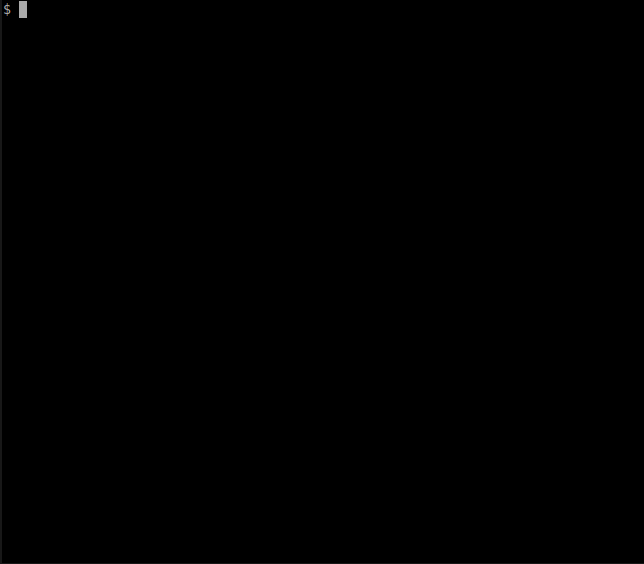

One aspect of the REMnux™ project involves providing Docker images of popular malware analysis tools, with the goal of allowing investigators to conveniently utilize difficult-to-install applications without having to install the REMnux distro. Such images could be compared to lightweight virtual machines; though they don’t offer the same level of isolation as real VMs, they provide a container within which the application can be encapsulated along with its dependencies.
See documentation below for more information and tune into the recorded webcast How to Run Linux Malware Analysis Apps as Docker Containers.
How to Run Dockerized Applications?
To run REMnux-provided application images, first you need to install Docker. This very easy to do on Linux (e.g. sudo apt-get install docker.io) and relatively painless on Windows and OS X. Just follow Docker’s installation instructions for your operating system.
Once Docker is installed, you can run a Dockerized application by specifying the name of the desired app image. For example, to run the REMnux-provided image of Thug, a low-interaction honeyclient, you would type something like sudo docker run --rm -it remnux/thug bash.

Docker maintains the Docker Hub Registry of public application images. The REMnux repository of several malware analysis apps images is published there. For a listing of the available applications and guidelines for running them, see below.
The first time you run a Dockerized application, Docker will automatically download it from the Registry; your system will need to be connected to the Internet at that time. Afterwards, Docker will use a local copy of the image without relying on the Internet. If the application’s image has been updated and you are connected to the Internet, Docker will automatically update your image when you run the app.
How Does Docker Work?
Docker takes advantage of Linux kernels’ ability to run applications in containers, which are sometimes described as “chroot on steroids.” Containers provide each application an independent runtime environment, while avoiding the overhead of a full-fledged virtual machine.
Each container gets its own virtual file system, process listing and network stack; however, containers share the OS kernel with each other and the underlying host. In this respect, the isolation provided by containers is less robust than that of real virtual machines, which have independent kernels and run on top of a hypervisor. Yet, sharing the kernel allows containers to run faster and offers management features that are difficult to accomplish with traditional virtualization.
An application distributed as a Docker image incorporates all the dependencies and configuration necessary for it to run, eliminating the need for end-users to install packages and troubleshoot dependencies. This approach allows developers to be certain that if the application worked in dev, it will work in production. Docker provides the tools necessary to build, run and manage applications packaged as Docker images.
Benefits of Applications as Containers
In many cases, it is convenient to launch malware analysis tools the traditional way by running them directly on the OS, for instance taking advantage of the packages preinstalled as part of the REMnux distribution. Alternatively, you might want to run a tool without installing it directly onto your system, perhaps because you want to keep your system unclattered, or because it lacks the dependencies necessary to run the application.
When running the app as a Docker container, you’re able to take advantage of the image developer’s efforts to figure out how to properly set up the application. Also, you get to benefit from any updates that the application’s developer and the image maintainer introduces without having to worry how to install them.
Because Docker images are mostly independent of each other, you can run applications in environments separate from each other and the underlying system; this is especially useful when applications rely on conflicting dependencies. Because Docker containers are more lightweight than virtual machines, it’s more practical to dedicate a container to a single app than trying to set up a VM per application.
A Redhat article outlines additional benefits that Docker offers, which include:
- Rapid application deployment
- Portability across machines
- Version control and component reuse
- Simplified maintenance
Lastly, those who are trying to install applications directly on their system without Docker can examine the Dockerfile config for the desired application to see explicit, scriptable instructions for installing the app into their own environment.
Docker containers have their limitations and sometimes it’s easier to run applications the traditional way. By providing Docker images several popular malware analysis tools, in addition to offering a full Linux distro, REMnux gives you the flexibility to investigate malicious software using several approaches.
Available Application Images
The REMnux repository on the Docker Hub Registry lists the images of malware analysis applications available as part of the project. These apps include:
- Google’s V8 JavaScript engine for JavaScript deobfuscation: remnux/v8
- Thug low-interaction honeyclient: remnux/thug
- Viper binary analysis and management framework: remnux/viper
- Rekall memory forensic framework: remnux/rekall
- JSDetox JavaScript analysis tool for deobfuscation: remnux/jsdetox
- Radare2 reverse-engineering framework and disassembler: remnux/radare2
- Pescanner static malware analysis tool for Windows PE files: remnux/pescanner
- The Volatility Framework for memory forensics: remnux/volatility
- MASTIFF static analysis framework for suspicious files: remnux/mastiff
- Maltrieve for retrieving malware samples: remnux/maltrieve
For more details about using these application images, please see Running REMnux-Provided Images.
Help expand this collection! You can put together Dockerfile configs for building Docker images of malware analysis applications that are not yet present in the repository. To do this, follow the guidelines in the article Creating Docker Images for REMnux.